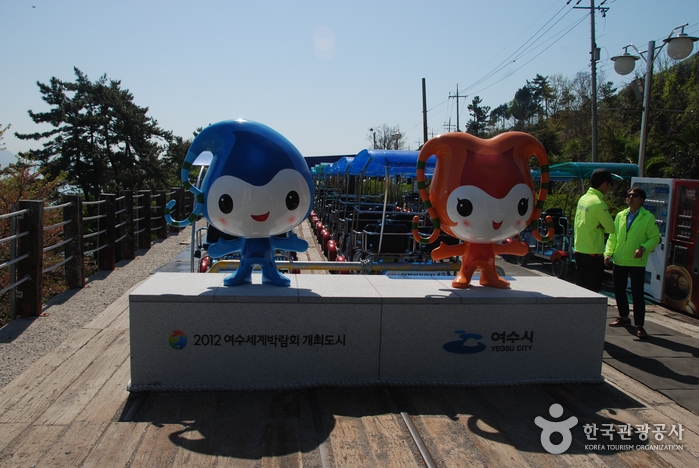
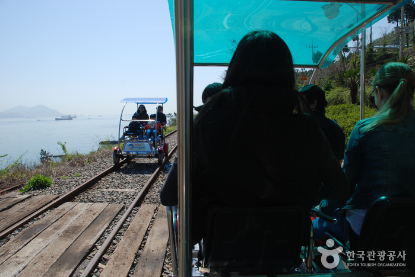
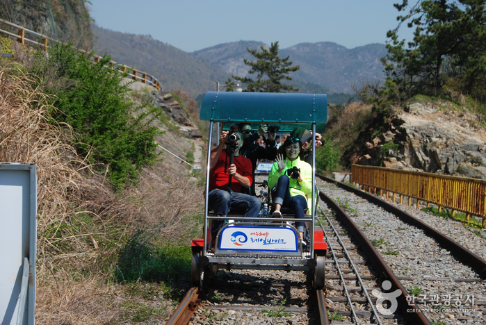
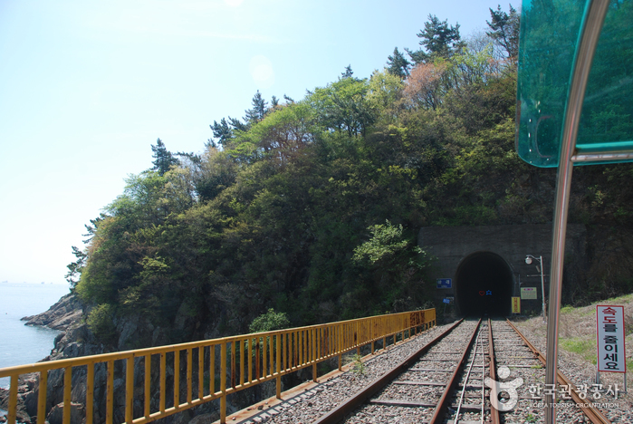

여수 해양레일바이크
   
지역 : 전남 여수
설명 : 탑승 구간 레일이 전부 해안가에 있어서 여수 바다의 매력을 온전히 느낄 수 있어요.
웹사이트 링크 1:
https://www.myrealtrip.com/offers/98821?utm_source=b2b&utm_medium=affiliate&utm_campaign=purchase_storycity
웹사이트 링크 2:
https://place.map.kakao.com/18033468
웹사이트 링크 3:
https://www.google.com/maps/place/여수해양레일바이크/@34.7724795,127.744557,17z/data=!3m1!4b1!4m5!3m4!1s0x356e762190544c81:0x4b5cbdcde4b9c0c!8m2!3d34.7724795!4d127.746751